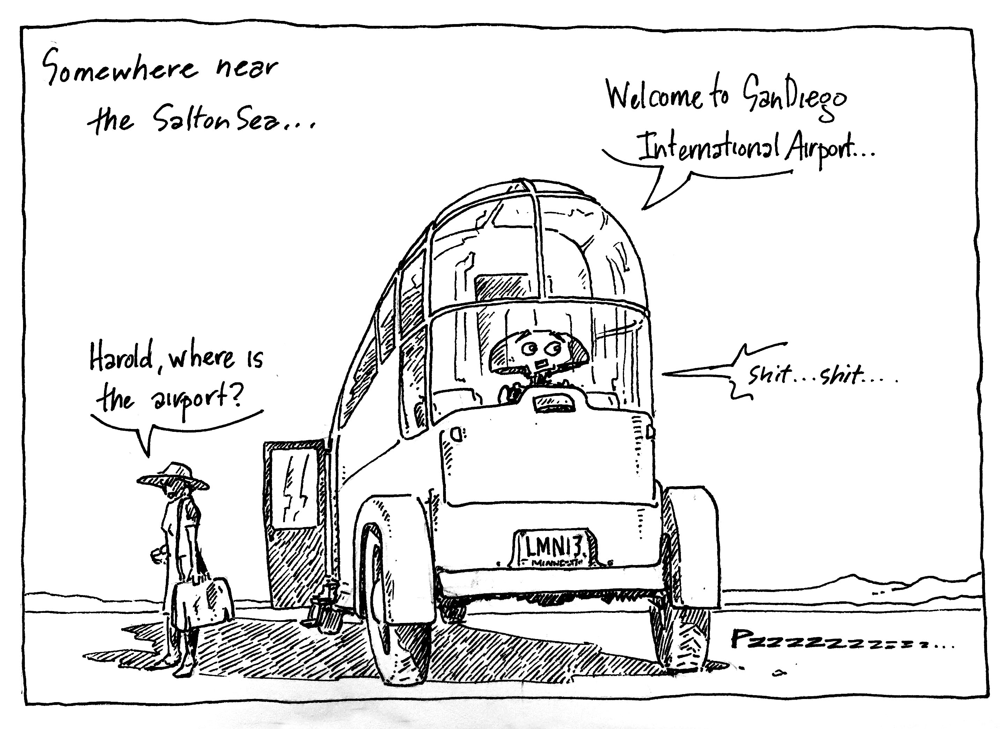

This archive contains examples of work done in the last several decades. Work projects, freelance work and original stories, drawings and cartoons that I have put together in rough categories. The stories, many unfinished and still in the works, contain early sketches, refined work and narrative storytelling.
